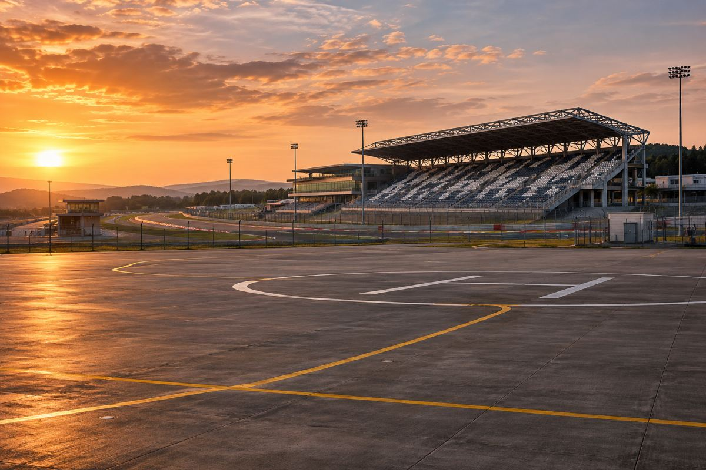

航空 / EXPLAINED
Archer与F1探讨赛道电动空中出租车
双方公布多年合作，载客航线和运行日期待公布。

Archer与F1于11月12日宣布多年合作，将参加美国、中东、亚洲与欧洲计划经营市场的部分大奖赛，并研究赛道电动空中出租车。公告未给机票、载客航线或首运日期。
Archer开发电动垂直起降飞机，Midnight面向反复短程城市飞行。垂直起降可避免传统长跑道，但客运仍需要飞机和运营批准及可用起降点。
公司称Midnight已在奥斯汀美国大奖赛展出，年内还计划在拉斯维加斯和阿布扎比展示。展示与载观众飞行有不同安排，观赛票不能据此视为包含飞行。
观众集中抵达，编辑部认为两端位置和吞吐量可能比空中时间更重要。飞行虽短，仍可能要驾车去起降点及步行至入口。需计入单位时间运量、充电与候乘空间。
电动推进在机上不烧燃料，整体影响仍涉及电力、电池和地面交通。噪音体验会随航线、频次及地形变化，公告未提供商业运行测量、运量及票价。
进场与返程需求宜分别评价。观众可能分散入场，却在结束时集中离开，同样飞机数量也可能排队更久。这是编辑部推断，非某场比赛预测或运量承诺，仍需考虑各站高峰与候乘空间。
近期安排为两站展示。客运需等许可、运营及销售日期和地点公布。届时除了飞行时长，还可比较入场路线、恶劣天气替代安排和赛后末班。